Nine shaped rooms, three broader shared connections and three optional shell-reserve ambushes. Existing objectives, main-route supplies, enemy totals, weapons and music stay steady.
These are unedited pixels from the actual game with fixed cameras and frozen actors. Reserve-open views accept the real pickup through its normal collection method and await the physical door. They are controlled previews, not played routes or approval of the concept match. Separate checks cover movement, collision, combat and campaign progression.
Authored footprint plan · Exact capture receipt
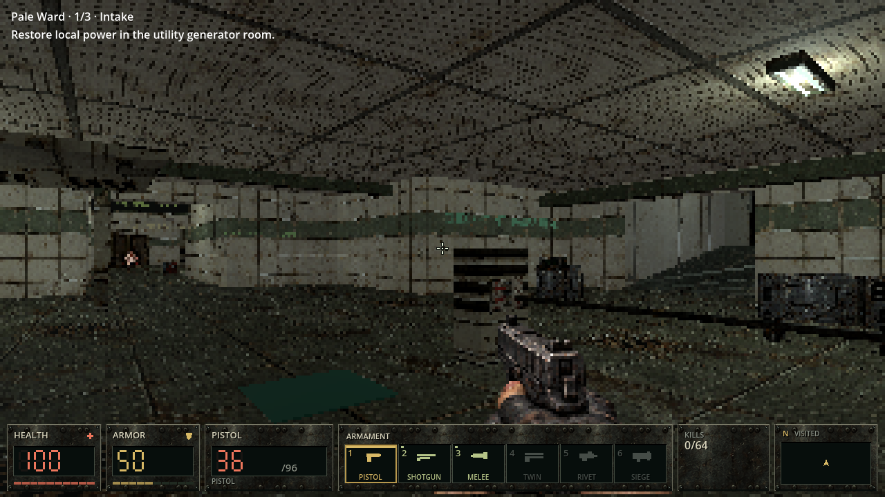
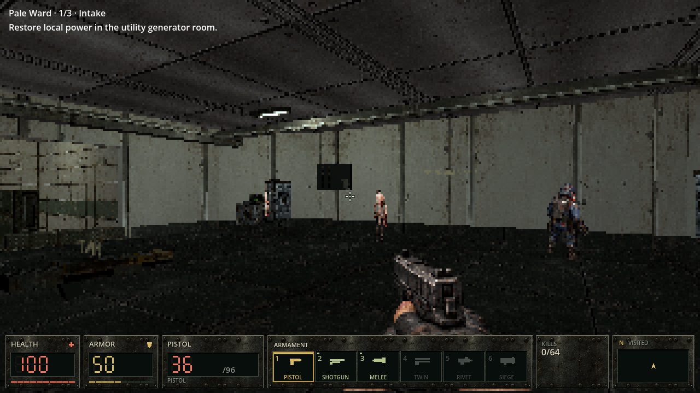
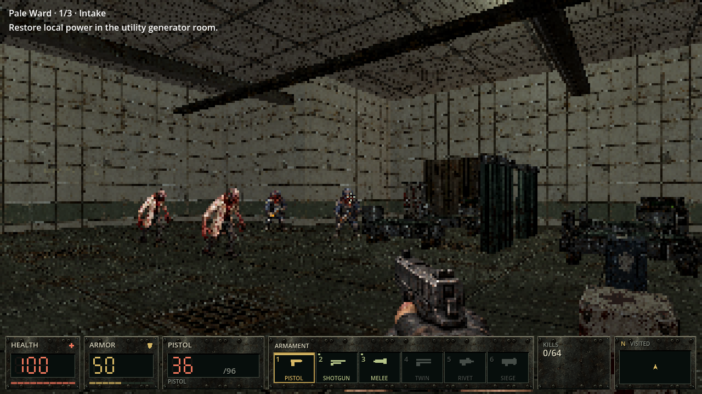
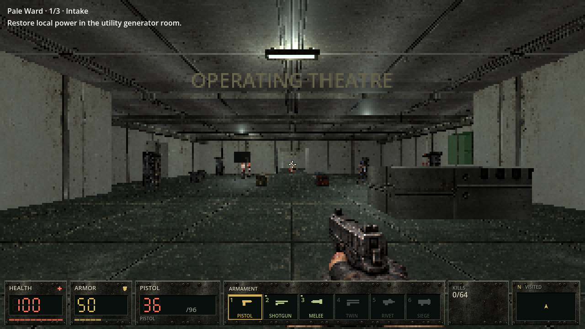
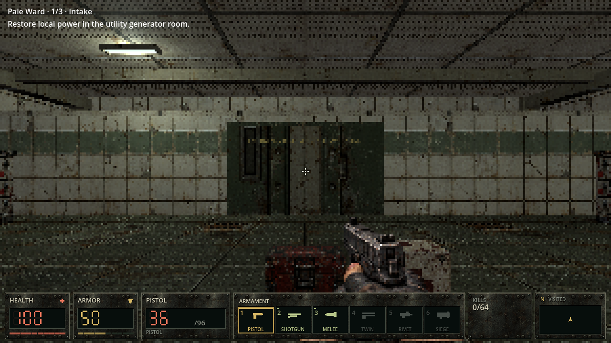
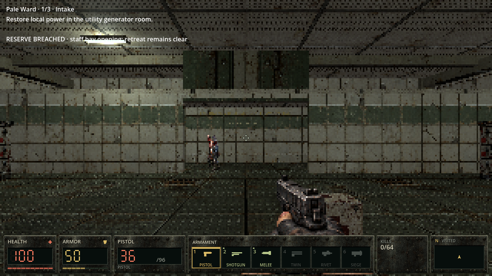
Authored footprint plan · Exact capture receipt
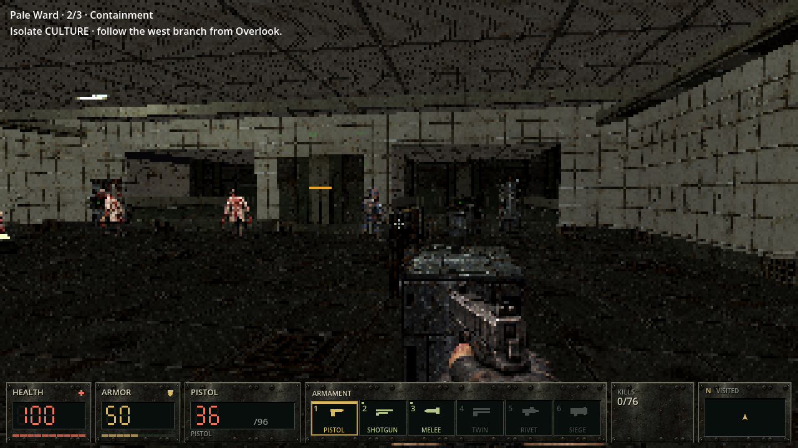
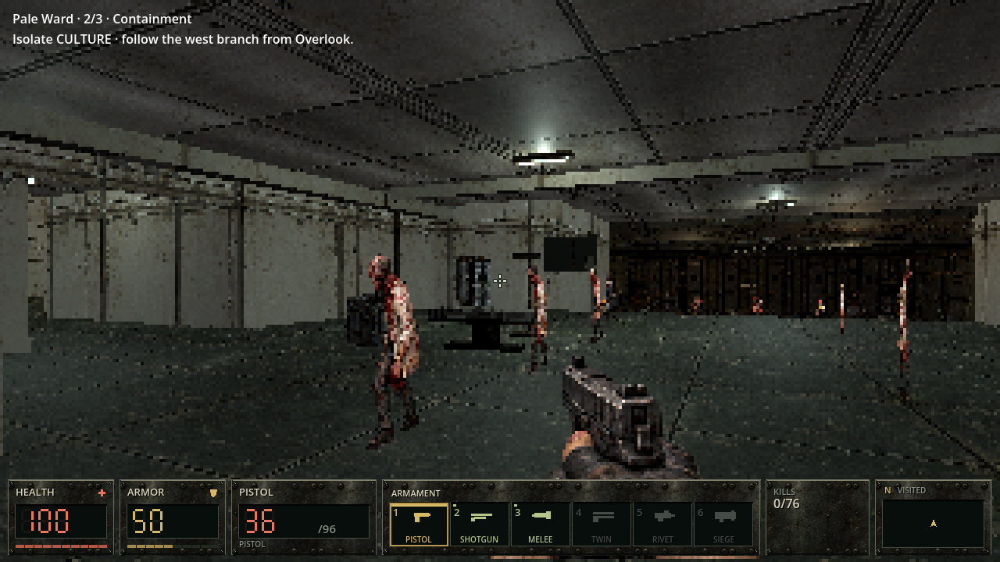
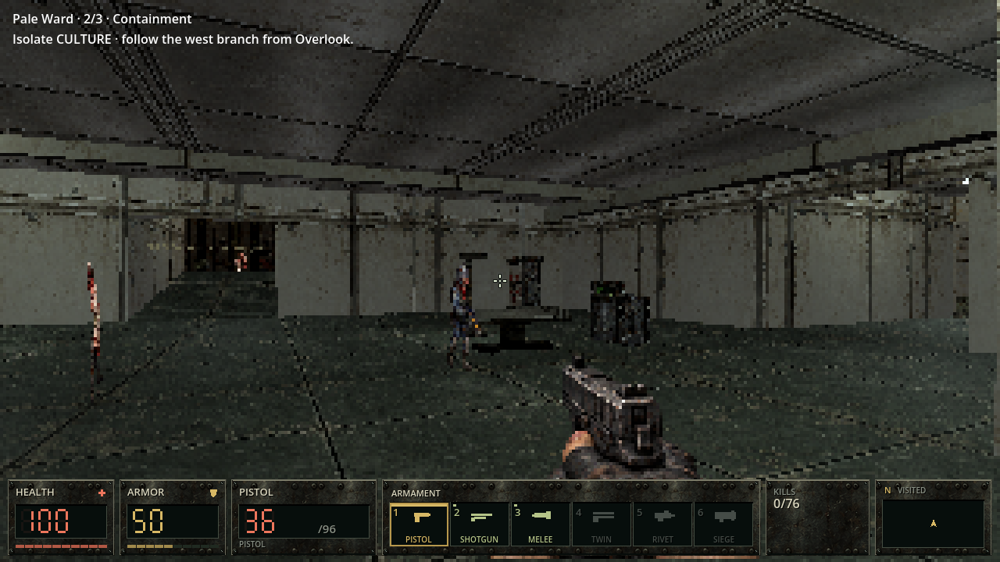
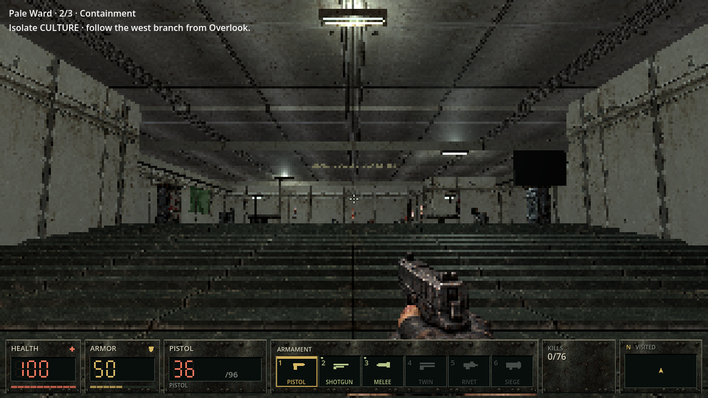
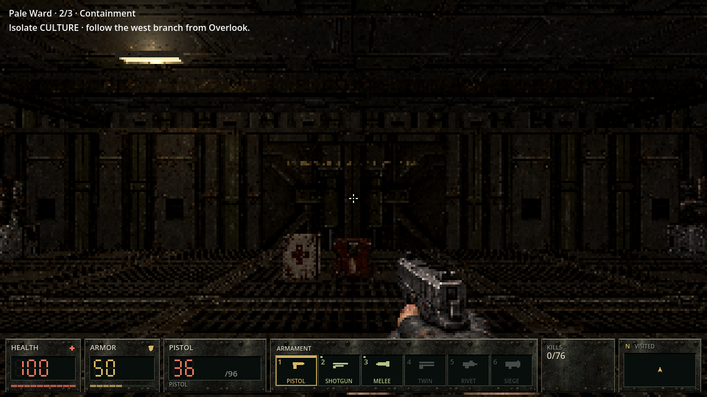
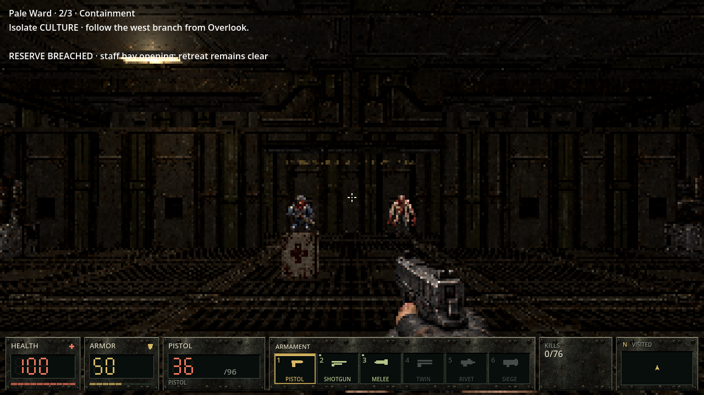
Authored footprint plan · Exact capture receipt
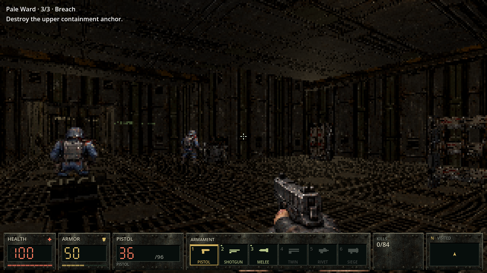
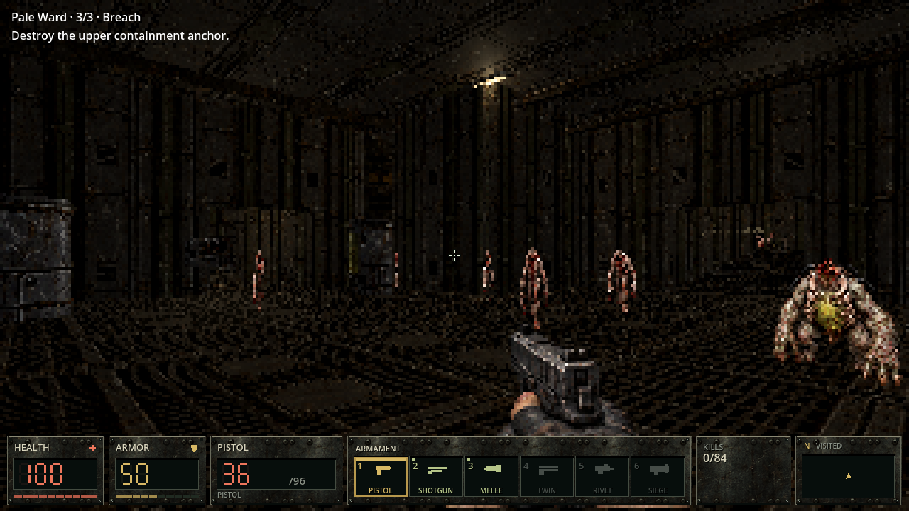
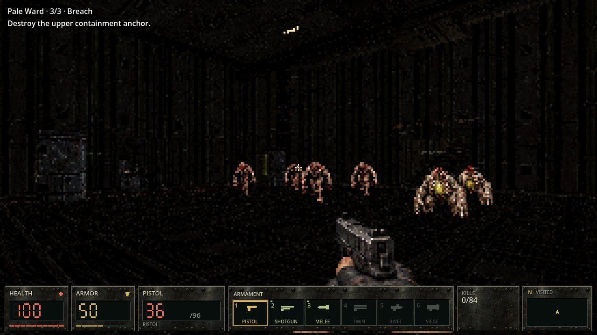
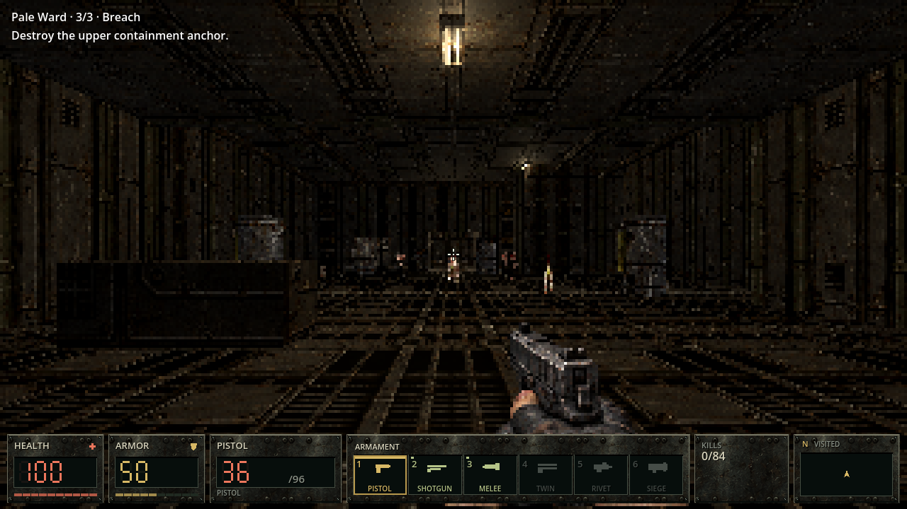
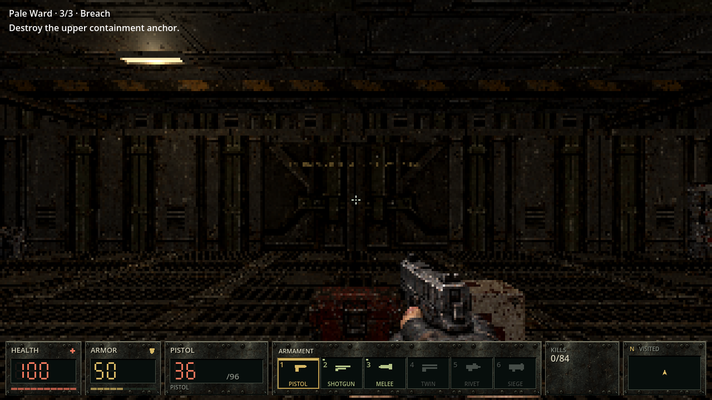
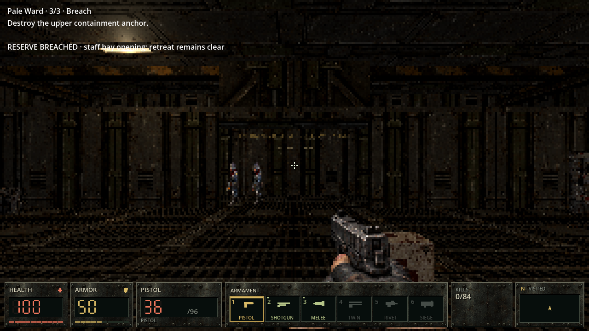